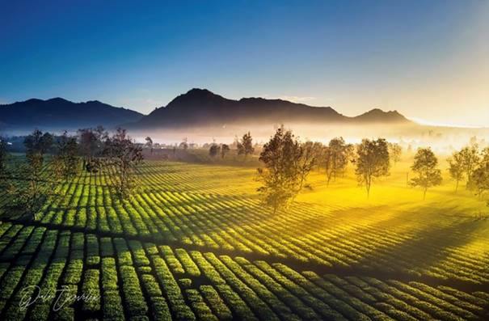

Gia Lai - Trải nghiệm và Chia sẻ
Gia Lai - Trải nghiệm và Chia sẻ
1.Chùa Minh Thành - Ngôi chùa mang phong cách Nhật Bản giữa phố núi Gia Lai

2.Biển hồ Gia Lai - “Đôi mắt xanh biếc” của thành phố Pleiku

3.Biển Hồ Chè - Bức tranh xanh mát của núi rừng Tây Nguyên
4.Núi lửa Chư Đăng Ya, điểm đến tuyệt vời tại phố núi

Gia Lai là một tỉnh có nguồn tài nguyên du lịch khá phong phú, đa dạng với nhiều cảnh quan thiên nhiên hùng vĩ, nhiều thắng cảnh đẹp, có nền văn hóa bản địa đặc sắc. Trải qua bao thăng trầm của lịch sử, vùng đất Gia Lai vẫn giữ cho mình nền văn hóa truyền thống đặc trưng, đa dạng. 4 lễ hội truyền thống ở Gia Lai dưới đây rất hấp dẫn du khách đến tham quan trải nghiệm.
Lễ cầu mưa Yang Pơtao Apui là một tín ngưỡng phồn thực với mong muốn mùa màng bội thu, mưa thuận gió hòa, ấm no, hạnh phúc đến cho tất cả buôn làng.. Đây là nét văn hóa độc đáo, chứa đựng nhiều giá trị tâm linh, tín ngưỡng của đồng bào bản địa, được công nhận là Di sản văn hóa phi vật thể quốc gia.
Người Jrai gọi mưa là “Hơ Jan” và rất coi trọng “Hơ Jan” vì giúp họ giải được nhiệt của cái nắng oi bức, làm cho hoa màu ở nương, rẫy trở nên tươi tốt và cho họ no cái bụng. Mặt khác, theo quan niệm của người Jrai, nếu làm phật lòng các vị thần thánh thì các vị thần thánh sẽ không ban tặng nước mưa xuống, bệnh tật xuất hiện, đói rét liên miên.
Sau khi chuẩn bị lễ xong, phụ tá và thầy cúng sẽ thực hiện các nghi lễ.
Trong đó có phần quan trọng là cầu xin các Ptao đã chết phù hộ cho những
lời khấn cầu thành hiện thực, để trời đem mưa đến.Trong không khí tưng bừng
của ngày hội, mọi người thay nhau uống rượu cần, chúc nhau một năm mưa thuận
gió hòa, mùa màng bội thu.
Lễ cầu mưa là nghi lễ rất quan trọng trong năm, là nghi lễ thể hiện văn hóa tâm linh của
người Jrai với các vị thần linh. Qua buổi lễ này, bà con làng Rbai sẽ bước vào một vụ mùa
mới với sự vui vẻ và lạc quan trong lao động sản xuất xây dựng cuộc sống no ấm. Du khách
còn có thể tham quan đại Công trình thủy lợi Ayun Hạ tại xã Ayun Hạ và Hồ Sen tại xã Ia
Yeng với vẻ đẹp của thiên nhiên hùng vĩ, hữu tình.
Lễ hội đường phố là hoạt động chào mừng Festival Văn hóa cồng chiêng Gia Lai 2023. Trên 1.000 nghệ nhân của 5 tỉnh Tây Nguyên đã có cuộc trình diễn đậm đà bản sắc và kết nối tình đoàn kết giữa các đồng bào dân tộc. Mỗi nghệ nhân đã góp sức mình để diễn xướng một nốt nhạc và cùng tạo ra bản hòa âm kỳ vĩ trên đường phố Pleiku.
Nếu thanh âm cồng chiêng mang đến một đại tiệc âm thanh thì sắc phục của các dân tộc là sự hội tụ độc đáo về màu sắc. Người Jrai, Bahnar ở Gia Lai hay người Giẻ Triêng tỉnh Kon Tum mang sắc phục thổ cẩm đen-đỏ rất đặc trưng. Trong khi đó, sắc phục người M'Nông (tỉnh Đak Nông) lại nổi bật với màu xanh lục chủ đạo. 2 dân tộc thiểu số lớn nhất tỉnh Lâm Đồng cũng góp sắc màu với 2 gam đối lập, người Mạ mang sắc trắng thổ cẩm còn người K’ho Sre lại mang sắc xanh đen…
Khi cây H’lưng đầu buôn, cây Ê-táp giữa làng ra nụ, nở hoa, đó chính là lúc buôn làng Gia Lai tổ chức Lễ Cơm Mới. Lễ Cơm Mới là lễ hội mừng mùa thu hoạch mới, cầu mong cho ruộng nương ngày càng nhiều thóc lúa. Được tổ chức tại nhà riêng hoặc nhà rông sau vụ thu hoạch của đồng bào Ba Na ở hai tỉnh Kon Tum và Gia Lai. Lễ được tổ chức để tạ ơn thần lúa và lễ hội mừng mùa thu hoạch mới, cầu mong cho ruộng nương ngày càng nhiều thóc lúa.
Dân làng cúng thần lúa bằng heo hoặc gà trước khi sử dụng lúa để ăn hoặc mang đi biếu. Trình tự lễ gồm: Giữ hồn lúa tại rẫy; đưa hồn lúa về chòi; nhập hồn lúa vào bồ trong đó bao gồm lễ ăn cơm mới.Đây cũng là dịp gia chủ mời bà con, họ hàng, bạn bè các làng lân cận cùng vui chơi ăn uống. Nhà nào đông khách coi như là niềm vinh dự. Vì thế, ngoài việc cúng thần, hồn lúa và tổ tiên cùng với việc cầu mong sức khỏe cho gia đình, người ta đánh cồng chiêng, vui chơi, ca hát suốt nhiều ngày đêm để vui mừng cùng hưởng thành quả của một quá trình lao động nhọc nhằn, vất vả. Đây là một trong những phong tục nhằm gìn giữ, phát huy những giá trị văn hóa truyền thống từ ngàn xưa cha ông ta để lại.
1.Sàn gỗ việt

2.Tìm hiểu thêm về Gia Lai

3.Báo Gia Lai điện tử